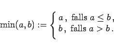
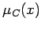
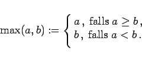
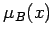
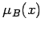
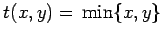
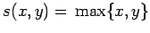
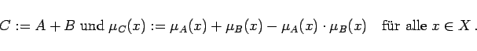
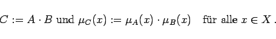

Inhalt Index DeskTop Bronstein

 Algebra und Diskrete Mathematik Fuzzy-Logik Verknüpfungen unscharfer Mengen Praktische Verknüpfungen unscharfer Mengen
Algebra und Diskrete Mathematik Fuzzy-Logik Verknüpfungen unscharfer Mengen Praktische Verknüpfungen unscharfer Mengen


wobei gilt:
|  | (5.375b) |
Der Schnittoperation entspricht die UND-Operation zweier Zugehörigkeitsfunktionen (s. linke Abbildung). Die Zugehörigkeitsfunktion  definiert den minimalen Wert, gebildet aus  und
und
wobei gilt:
|  | (5.376b) |
Die Vereinigung enstpricht der logischen ODER-Verknüpfung (rechte Abbildung). Die Darstellung zeigt als den maximalen Wert der jeweiligen Zugehörigkeitsfunktionen  und .
und .
| Beispiel |
|
Die t-Norm  wird als Durchschnitt bezeichnet (linke Abbildung) und die s-Norm  als Vereinigung (rechte Abbildung). |
|  | (5.377a) |
Wie die Vereinigung (5.376a,b) gehören die genannten Summen zu den s-Normen. Sie sind in vereinfachter Schreibweise in der rechten Spalte der Tabelle der t- und s-Normen zu finden.
In Analogie zum erweiterten Summenbegriff für die Vereinigungsbildung ergeben sich für die Durchschnittsbildung mit Hilfe des beschränkten, des algebraischen und des drastischen Produktes entsprechende Erweiterungen. So ist z.B. das algebraische Produkt wie folgt definiert:
|  | (5.377b) |
Es gehört wie die Durchschnittsbildung (5.375a,b) zu den t-Normen, die in der mittleren Spalte von Tabelle der t- und s-Normen zu finden sind.